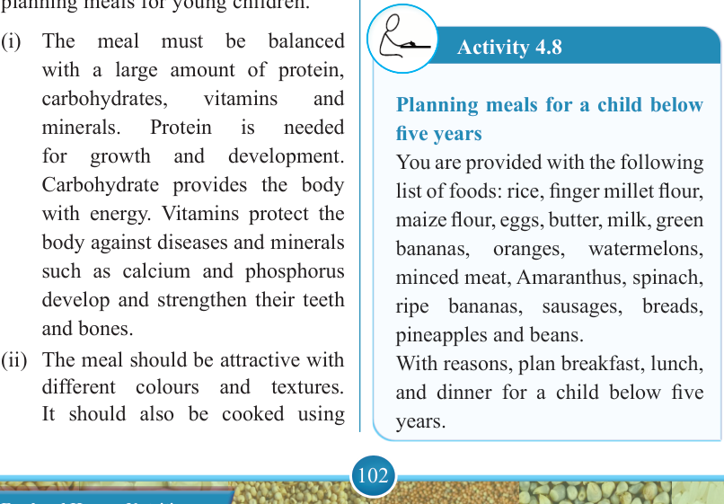
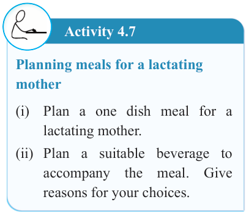

102


Food and Human Nutrition

Form Two

Activity 4.7
Planning meals for a lactating mother
(i) Plan a one dish meal for a lactating mother.
(ii) Plan a suitable beverage to accompany the meal. Give reasons for your choices.
Meals for children below five years
Children are very active and they engage in different physical activities such as playing, running, climbing, dancing and jumping. Their growth rates are higher compared to other groups. Therefore, it is important to plan for suitable meals that can meet their daily nutritional needs. The following are points to consider when planning meals for young children.
(i) The meal must be balanced with a large amount of protein, carbohydrates,
vitamins
and
minerals.
Protein
is
needed
for
growth
and
development.
Carbohydrate provides the body with energy. Vitamins protect the body against diseases and minerals such as calcium and phosphorus develop and strengthen their teeth and bones.
(ii) The meal should be attractive with different colours and textures.
It should also be cooked using
different cooking methods to avoid monotony. Monotonous meals may cause them to lose appetite.
(iii) The meal should not have too much seasonings, spices, fats or oil. These may affect the child’s appetite.
(iv) Consider health snacks or bites in-between main meals, but not just before the main meal because doing so can cause them to eat less of the main meal.
Suggested suitable dishes for children below five years
Shepherd’s pie, fish soup, banana porridge with meat, enriched porridge, boiled vegetables, boiled rice, rice pudding, mashed potatoes, fried fish, vegetable salads, fruit salads, fruit juices, milk puddings, stewed banana with meat, boiled egg, pancakes, bread sandwich with egg and fried potatoes.
Activity 4.8
Planning meals for a child below five years
You are provided with the following list of foods: rice, finger millet flour, maize flour, eggs, butter, milk, green bananas,
oranges,
watermelons,
minced meat, Amaranthus, spinach, ripe bananas, sausages, breads, pineapples and beans.
With reasons, plan breakfast, lunch, and dinner for a child below five years.
17/09/2025 16:30